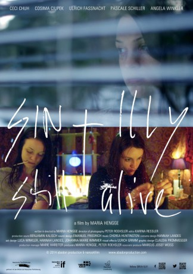

#8197 Sin & Illy still alive
 
 IMDB-Wertung: 8.1 / 10
IMDB-Wertung: 8.1 / 10  Metascore: 0
Metascore: 0 
Sin und Illy haben einen Plan: auf einer griechischen Insel wollen sie auf eigene Faust "clean" werden. Doch das Vorhaben der zwei Mädchen scheitert schon auf dem Weg zum Flughafen. Schließlich sieht Sin ein, dass sie ihren eigenen Weg gehen muss, um vom Heroin los zu kommen.
Jahr: 2015
Dauer: 70 Minuten
FSK:
Land: Deutschland Studio: Abadon ProductionTonspuren:
Untertitel:
Auflösung: 1080p (1920x800) Größe: 2170 MB
Genre: Drama, Krimi
Regisseur: Maria Hengge
Drehbuch: Sion Sono
Soundtrack:
Darsteller:
- Ceci Chuh als Sin
- Sonja Gerhardt als Sister of Sin
- Maria Hengge als Pharmacist Kahl / M
 Angela Winkler als Doctor
Angela Winkler als Doctor- Cosima Ciupek als Illy
- Ionas Amelung als Spitting Man
 David Bredin als Male Police Officer
David Bredin als Male Police Officer- Ute Büttner als Toilet Woman
- Ulrich Faßnacht als Leon
- Gaffa als Mark
- Bekim Gashi als Man at the camping space
- Tania Golden als Toilet Woman Reading
- Nina Hecklau als Female Banker
- Orang Utan Klaus als Drummer band Abadon
- Renate Regel als Female Police Officer
- Thilo Richter als Banker
- Franziska Rieck als Lea
- Katja Sallay als Nurse
- Pascale Schiller als Mother of Illy
- Lisa Terne als Woman at the camping space
- Arno Waschk als Pharmacist Ffm
- Luca Winkler als Luk
- Burak Yigit als Mesuth
Datei: X:\2015(N-Z)\Sin & Illy still alive (2015, FSK, 1920x800).mkv seit 07.02.2018
Festplatte: HD 2015(A-Z)
 Es gibt insgesamt 161 Filme in der Gruppe '2015(N-Z)'
Es gibt insgesamt 161 Filme in der Gruppe '2015(N-Z)'